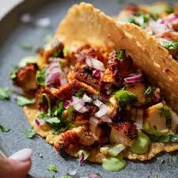

Chicken Tacos

Description:
Chicken tacos are a flavorful and easy-to-make dish featuring seasoned,
tender chicken tucked into warm tortillas and topped with fresh ingredients like lettuce, salsa,
cheese, and avocado. Perfect for weeknight dinners or gatherings.
Ingredients:
- 1 lb chicken breast (cut into strips)
- 1 tbsp taco seasoning
- 1 tbsp oil
- 6 small tortillas
- Toppings: lettuce, salsa, cheese, avocado, sour cream
Steps:
- Cook chicken: Heat oil in a pan, add chicken and taco seasoning, and cook until golden and cooked through (about 6–8 minutes).
- Warm tortillas: Heat in a dry pan or microwave for 20 seconds.
- Assemble: Fill tortillas with chicken and your favorite toppings
- Serve: Enjoy fresh with lime wedges!